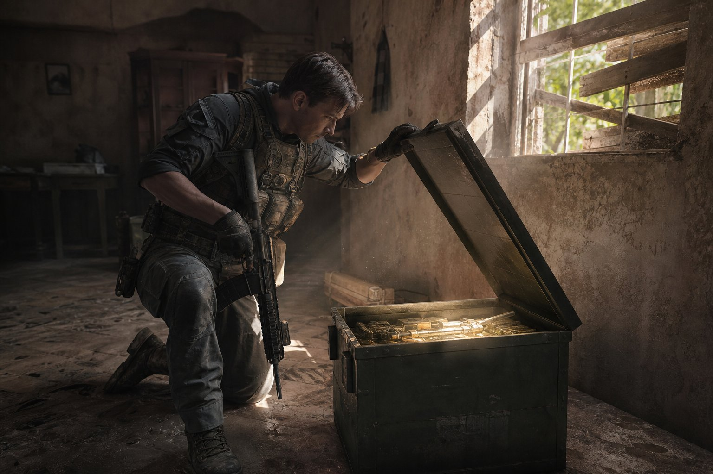

Le concept : un extraction shooter, c'est quoi ?
Arena Breakout Infinite (ABI) est un « tactical extraction shooter » : tu entres dans une zone avec ton équipement, tu cherches du butin, tu combats des joueurs et des IA, et tu dois te rendre à un point d'extraction pour garder ce que tu as trouvé. Si tu meurs, tu perds tout ce que tu portais (hors container sécurisée). C'est la boucle Search → Combat → Extract — chercher, combattre, s'exfiltrer.
🧠 La règle mentale du débutant
Avant chaque raid, donne-lui UN objectif principal : « apprendre 2 extractions sur Farm », « finir une mission de contact », « récupérer des médicaments en Covert Ops ». L'objectif fait = raid réussie, même avec peu de loot. Cela évite la spirale « encore un container… » qui se termine mort.Les modes de jeu : par où commencer ?
| Mode | Principe | Risque | Usage débutant |
|---|---|---|---|
| Tactical Ops | La raid classique avec ton propre équipement | Moyen en Normal, élevé en Lockdown/Forbidden | Apprendre la vraie boucle avec un kit jetable |
| Covert Ops | Tu joues un scav : équipement prédéfini gratuit, zéro risque | Très faible | ★★★ Apprendre cartes, extractions et loot sans rien perdre |
| Secure Ops | Mode bienveillant : l'essentiel de ton équipement est conservé à la mort | Faible | Apprendre les fights avec protection |
| No Man's Land | PvE solo/escouade avec ticket, aucun joueur hostile | Nul (PvP) | Farmer des Koens sereinement (variante Zombies en S7) |
💡 Conseil communauté
Passe tes 5 premières heures en Covert Ops (topuplive) : mêmes cartes, mêmes loots, mêmes IA — mais aucun joueur humain pour te dépouiller. Tu apprends les extractions, les spawns et les emplacements de butin en risque zéro.L'ordre d'or avant chaque raid
La communauté a codifié une séquence d'entrée qui évite 80 % des erreurs de lobby :
- Stockage — vérifie ce que tu as réellement (armes, meds, place).
- Missions — prends-en au moins une : XP et Koens gratuits, raids avec un but.
- Contacts — regarde les offres limitées de Deke et les barters rentables.
- Loadout — équipe-toi (checklist ci-dessous).
- Match — choisis carte, difficulté, météo — et lance-toi.
Construire son loadout (checklist pré-raid)
Un loadout complet, pas une arme jolie : meurtre dans 2 minutes = la fameuse « donation » de kit.
| Slot | Travail minimum | Check débutant |
|---|---|---|
| Arme principale | Fiable, adaptée à la portée de la carte | Teste-la au stand de tir avant de payer la raid |
| Chargeurs | Recharges immédiates dans le rig | Vérifie compatibilité chargeur/munitions |
| Armure + casque | Réduire le risque de mort subite | Regarde durabilité et zones couvertes, pas seulement le tier |
| Casque audio | Information avant visuel | Obligatoire : le son est ton radar |
| Medkit | Soigner les pertes de PV | Épargnes restantes suffisantes ? |
| Pansements | Stopper les saignements | Dans le rig, pas enterré sous le loot |
| Kit chirurgical | Réparer les membres black-out | Savoir : 3-5 s d'animation = t'es couvert |
| Analgésiques | Bouger malgré une jambe cassée | Achat d'urgence : ça rachète du temps, pas de la vie |
| Nourriture/eau | Éviter fin de raid affamé/déshydraté | Surtout après médicaments et longues routes |

Le loadout « Zero to Hero » (budget ~10–15k)
- Arme : SMG pas chère (MPF45) ou M4A1 de départ — ou M870 + point rouge + AP slugs pour un build de débutant redoutable.
- Munitions : T3 minimum (7.62 PS, 5.56 M193) — voir section munitions.
- Protection : rig blindé T3 léger, casque basique ou aucun.
- Meds : medkit de base + 2 pansements + attelle.
- Sac : optionnel — souvent tu en trouves en raid.
- Total : ~8 000 à 14 000 Koens — tu peux mourir sans souffrir.
⚠️ Règle des deux kits
Garde toujours 2 kits budget dans ton stockage. Le kit « beau » ne sort que quand ton taux d'extraction dépasse ~40 %. En attendant, il reste au chaud.Ta première raid, pas à pas
- Choisis Farm en Normal, de jour. Carte simple, timer court (20 min), hotspot éloigné.
- Équipe un kit budget — sans assurance (trop cher pour du jetable).
- Apparais, trouve ta couverture — ouvre la carte immédiatement (touche M dès l'écran de chargement pour voir où tu spawns).
- Bouge silencieusement : marche, ne sprinte pas. Le sprint s'entend à 30 m+.
- Reste sur les bords — évite le centre (Motel, compounds principaux) la première semaine.
- Loot « sûr » : vestes, tiroirs, boîtes à outils, sacs médicaux, coffres d'armes dans les zones calmes.
- Identifie ton extraction dès que ton sac a de la valeur. Ne traîne pas.
- Approche prudemment : portes ouvertes, corps, loot abandonné = passage récent. Entre, sors, ne reste pas.
🚨 Le réflexe anti-gourmandise
Tu as 1-2 millions de valeur dans le sac ? C'est parti pour l'extraction. Entendre un coup de feu loin ne veut pas dire « encore un kill ». La plus grande perte de Koens du jeu n'est pas une mauvaise arme — c'est l'avidité de fin de raid.Choisir sa carte : la progression recommandée
| Carte | Difficulté | Quand y aller |
|---|---|---|
| Farm | ★★☆ | Maintenant — layout simple, spawns prévisibles, raid 20 min |
| Valley | ★★☆ | Dès que Farm est rassasié — bonnes quêtes, portées mixtes |
| TV Station | ★★★ | Vers le niveau 15 — CQB impitoyable, loot énorme |
| Northridge | ★★★ | Vers le niveau 25 — grosse carte, snipers, villas premium |
| Armory / Airport | ★★★ | Late-game — top loot, top mort |
Memorise 2 extractions proches de ton spawn par carte avant d'y aller : lire les noms d'exfil en plein raid = se faire tuer.
Santé & bases du combat
Les 4 états à gérer
- Saignement → pansement (sinon tu meurs lentement).
- Membre black-out (jambe, bras…) → kit chirurgical derrière un couvert, 3-5 secondes d'animation.
- PV bas → medkit.
- Immobilisé par la douleur → analgésique avant l'engagement (le fameux « painkiller préventif »).
Tirer correctement
- Vise la tête. En S7 : ricochet casques supprimé = ton headshot est récompensé à chaque fois.
- Repositionne après chaque tir : le flash et le bruit ton positionnent. Ne peek jamais deux fois le même angle.
- Peek droit > peek gauche : le peek droit expose ~5-10 % du corps, le gauche ~25 %.
- Le son est ton radar : écoute 30-40 % du temps. Sans casque audio, tu joues à l'aveugle.
Les munitions comptent plus que les armes
« Un AK stock en munitions T3 bat un M4 moddé en munitions T1. » La pénétration d'armure détermine la vitesse de kill — investis dans les balles avant les accessoires.
| Budget | Munitions recommandées | Usage |
|---|---|---|
| Écolo | 7.62 PS · 5.56 M193 · 5.45 PP | Normals, cibles en armure T3 max |
| Standard | BP (7.62) · BS (5.45) · SS109 (5.56) — T4 | Le cheval de bataille Lockdown (cap T4/T5 en S7) |
| Haut de gamme | AP · 7N39 · M61 — T5 | Lockdown/Forbidden selon les caps S7 |
En Saison 7, les caps par mode simplifient les choix : Normal = T4 max, Lockdown = T5 max. Inutile d'acheter du T6 pour du Normal — c'est interdit, point.
Tes premiers Koens
- Covert Ops & courses Impostor : kit gratuit, tu ne peux rien perdre — la machine à cash débutant.
- Vends tout ce que tu n'utilises pas : munitions inutiles, mods non meta, casques encombrants. L'espace de stockage vaut plus que les 10 % de frais.
- Empile les ventes par 5 sur le marché : un emplacement de vente = une vente — rentabilise-le.
- Deke : vérifie ses offres limitées à chaque refresh — des flips à 150k+ sont rapportés par la communauté.
- Missions : toujours au moins une active. XP + Koens + réputation contact (qui réduit tes commissions).
- Container sécurisée : stash dedans les trésors (stims, STL/STTO, rouges) — une mort n'efface pas tout.
Les 10 erreurs des débutants (à éviter absolument)
- Sortir son seul beau kit dès les premières raids.
- Sprinter partout — tout le monde t'entend arriver.
- Tirer sur chaque bruit — souvent un scav, parfois un allié… et toujours ton positionnement révélé.
- Ne pas apprendre les extractions avant la raid.
- Soigner en plein champ — 3-5 s d'animation = cible gratuite.
- Ignorer les missions de faction (XP et argent faciles).
- Traverser le centre de la carte par paresse.
- Chercher chaque loot de fin de raid alors que le sac est plein.
- Spender tout son cash dans une arme sans meds ni munitions de réserve.
- Jouer sans casque audio ou avec le son coupé.
10 conseils pour survivre sa première semaine
- 5 heures en Covert Ops avant de te sentir à l'aise en Tactical.
- Un objectif par raid — le loot suit, la panique non.
- Reste sous 50k de loadout jusqu'à un taux d'extraction ~40 %.
- Achète de la munition avant des mods. Toujours.
- Mémorise 2 extractions par carte, proches de ton spawn.
- Bouge sur les bords, écoute 30-40 % du temps.
- Soigne uniquement derrière un couvert.
- Quitter avec un bon sac est une victoire — pas une fuite.
- Jours uniquement le premier mois (meilleure visibilité, IA prévisibles).
- Clique sur les pastilles rouges du menu principal : le jeu distribue des cadeaux gratuits partout.
Progression recommandée (niveau 1 → 30+)
| Palier | Objectifs | Focus |
|---|---|---|
| Niv. 1–10 | Ouvrir Joel (niv.1), Evita (niv.1), Deke (niv.3) | Farm + Covert Ops, missions de contact, 2 kits budget |
| Niv. 8+ | Débloquer le Zombie Endless (S7) | Apprendre les 6 mutants sans risque (Airport) |
| Niv. 10–20 | Vladlen (niv.6), Thomas (niv.9), Randall (niv.12) | Valley, premiers Lockdown, maîtriser 2 cartes |
| Niv. 15 | TV Station | CQB, audio, gamesense |
| Niv. 25–30 | Northridge, Lockdown confortable | Battle Pass, mastery points (niv.19 : +3 pts) |
🧟 Bonus Saison 7
Aucun wipe de stockage au lancement d'Utopia : tes Koens, armes et progressions sont conservés — seuls le rang de saison et le Battle Pass redémarrent. Profite-en pour construire ta base tranquillement.FAQ débutants
Farm. Layout simple, spawns prévisibles, raid de 20 minutes, loot honnête. Puis Valley, TV Station (niv. 15), Northridge (niv. 25).
30 000 à 50 000 Koens pour un kit complet efficace (arme + T3/T4 + armure T3 + meds). Le haut de gamme commence vers 100k, le full-gear à 300k+. Ne sors jamais plus cher que ce que tu peux perdre sans geindre.
Les 20-30 premières raids tu meures beaucoup — c'est normal. Vers 50 heures, tu survivs à la majorité de tes Normales. Les joueurs corrects visent 40-60 % d'extraction (référence communauté).
Non. Les caps S7 limitent le Normal au T4 et le Lockdown au T5. Du T4 bien placé en Normal est optimal — garde ton cash pour les munitions et les upgrades de stockage.
La container sécurisée (1×2 → 3×3 selon progression) conserve une partie du butin : stash-y STL/STTO, stims, munitions de réserve et objets rouges. Et vends régulièrement : un stockage plein = argent dormir.
Sources — Patch notes officielles MoreFun/Steam (Saison 7 Utopia, 16/09/2026) · reddit r/ArenaBreakoutInfinite (Ultimate Tips 2.0/3.0, threads débutants) · topuplive beginner guide · timesaver.gg · aegischeats beginner2026 · 9puz guide. Vérifié le 17 novembre 2026.